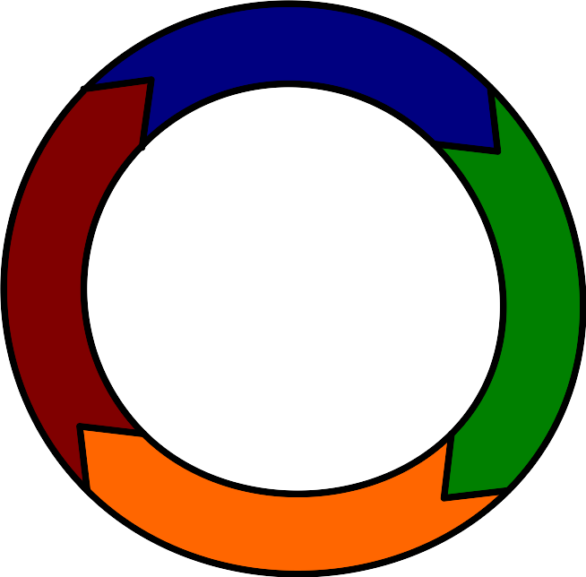

Qualitätsmanagement
Die "Theorie der vollständigen Handlung" stammt aus der Pädagogik und beschreibt, wie man am besten lernt und arbeitet.
Eine vollständige Handlung besteht aus folgenden Schritten:
Jetzt kommen wir zum PDCA-Zyklus, auch bekannt als Deming-Kreis (nach William Edwards Deming) oder Shewhart-Zyklus (nach Walter Shewhart).
Der PDCA-Zyklus ist nicht einfach nur eine Wiederholung der vollständigen Handlung, sondern setzt auf einer höheren Ebene an: Er dient der systematischen Verbesserung von Prozessen und Produkten.
Unterschiede zur vollständigen Handlung:

– Die Grundlage für Verbesserungen legen
Methoden und Werkzeuge für die Plan-Phase:
– Die Umsetzung der Maßnahmen
Wichtige Aspekte der Dokumentation:
– Hat die Maßnahme funktioniert?
Methoden für die Check-Phase:
– Erkenntnisse in den Regelbetrieb übernehmen
Wichtige Aspekte für erfolgreiche Standardisierung:
– Kontinuierlicher Verbesserungsprozess Der KVP (kontinuierlicher Verbesserungsprozess) basiert auf dem PDCA-Zyklus. Die Idee dahinter: Man hört nie auf, systematisch nach besseren Lösungen zu suchen. Fehler und Probleme sind keine Katastrophen, sondern Gelegenheiten, um zu lernen und Abläufe zu optimieren.
Die Integration von PDCA im KVP:
KVP in der IT-Praxis:
Verbindung zu anderen Qualitätsmanagement-Ansätzen: